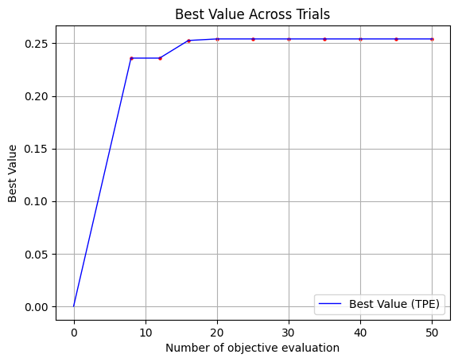

Service optimization
[1]:
import pandas as pd
blocks = pd.read_pickle('./../../data/blocks.pickle')
columns = [c for c in blocks.columns if 'capacity_' in c]
blocks = blocks[['geometry', 'population', 'site_area', *columns]].copy()
blocks.head(3)
[1]:
| geometry | population | site_area | capacity_school | capacity_kindergarten | capacity_hospital | capacity_polyclinic | capacity_pitch | capacity_swimming_pool | capacity_theatre | ... | capacity_train_station | capacity_bus_station | capacity_bus_stop | capacity_pier | capacity_animal_shelter | capacity_prison | capacity_landfill | capacity_plant_nursery | capacity_greenhouse_complex | capacity_warehouse | |
|---|---|---|---|---|---|---|---|---|---|---|---|---|---|---|---|---|---|---|---|---|---|
| 0 | POLYGON ((349424.859 6631180.891, 349424.751 6... | 0.0 | 0.032316 | 0.0 | 0.0 | 0.0 | 0.0 | 0.0 | 0.0 | 0.0 | ... | 0.0 | 0.0 | 0.0 | 0.0 | 0.0 | 0.0 | 0.0 | 0.0 | 0.0 | 0.0 |
| 1 | POLYGON ((352083.617 6633950.146, 352240.448 6... | 0.0 | 137101.088247 | 0.0 | 0.0 | 0.0 | 0.0 | 0.0 | 0.0 | 0.0 | ... | 20.0 | 0.0 | 0.0 | 0.0 | 0.0 | 0.0 | 0.0 | 0.0 | 0.0 | 0.0 |
| 2 | POLYGON ((346700.642 6618453.176, 346681.107 6... | 109.0 | 95239.084434 | 0.0 | 0.0 | 0.0 | 0.0 | 0.0 | 0.0 | 0.0 | ... | 0.0 | 0.0 | 0.0 | 0.0 | 0.0 | 0.0 | 0.0 | 0.0 | 0.0 | 0.0 |
3 rows × 63 columns
[2]:
accessibility_matrix = pd.read_pickle('./../../data/acc_mx.pickle')
accessibility_matrix.head()
/home/ivan/work/ovanes-projects/urban-planning-optimizer/general/.venv/lib/python3.12/site-packages/pandas/io/formats/format.py:1458: RuntimeWarning: overflow encountered in cast
has_large_values = (abs_vals > 1e6).any()
[2]:
| 0 | 1 | 2 | 3 | 4 | 5 | 6 | 7 | 8 | 9 | ... | 9358 | 9359 | 9360 | 9361 | 9362 | 9363 | 9364 | 9365 | 9366 | 9367 | |
|---|---|---|---|---|---|---|---|---|---|---|---|---|---|---|---|---|---|---|---|---|---|
| 0 | 0.0000 | 58.15625 | 74.187500 | 76.937500 | 66.8125 | 80.5000 | 92.18750 | 66.56250 | 65.68750 | 106.8750 | ... | 70.0000 | 72.1875 | 72.0000 | 73.3125 | 73.2500 | 74.0000 | 75.5000 | 83.1875 | 75.0000 | 73.2500 |
| 1 | 56.2500 | 0.00000 | 99.687500 | 102.375000 | 88.1250 | 76.1250 | 113.43750 | 89.43750 | 88.56250 | 96.3125 | ... | 65.6250 | 67.7500 | 67.6875 | 69.0000 | 68.8750 | 69.6875 | 71.1875 | 78.8125 | 70.6875 | 68.8750 |
| 2 | 74.5000 | 96.50000 | 0.000000 | 5.347656 | 74.0000 | 118.8125 | 92.06250 | 64.43750 | 63.56250 | 134.5000 | ... | 108.3125 | 110.4375 | 110.3750 | 111.6875 | 111.5625 | 112.3750 | 113.8125 | 121.5000 | 113.3750 | 111.5625 |
| 3 | 77.2500 | 99.25000 | 5.347656 | 0.000000 | 76.7500 | 121.5625 | 90.12500 | 67.18750 | 66.31250 | 137.2500 | ... | 111.0625 | 113.1875 | 113.0625 | 114.3750 | 114.3125 | 115.0625 | 116.5625 | 124.2500 | 116.1250 | 114.3125 |
| 4 | 70.1875 | 90.56250 | 82.375000 | 85.125000 | 0.0000 | 110.5000 | 35.53125 | 45.15625 | 44.28125 | 89.8750 | ... | 100.0000 | 102.1250 | 102.0000 | 103.3125 | 103.2500 | 104.0000 | 105.5000 | 113.1875 | 105.0000 | 103.2500 |
5 rows × 9368 columns
Select ID of optimized blocks
[3]:
from blocksnet.enums import LandUse
blocks_lu = {
2059 : LandUse.RESIDENTIAL
}
Service distribution
[4]:
basic_services = {
"kindergarten": 0.2,
"school": 0.2,
"pharmacy": 0.2,
"polyclinics": 0.3,
"convenience": 0.2,
"cafe": 0.15,
"playground": 0.2,
"post": 0.1,
"hairdresser": 0.1
}
advanced_services = {
"hospital": 0.5,
"supermarket": 0.4,
"restaurant": 0.3,
"park": 0.8,
"bank": 0.3,
"fuel": 0.25,
"police": 0.2,
"cinema": 0.2,
"market": 0.2,
"religion": 0.5,
"multifunctional_center": 0.1,
"train_building": 0.1,
"cemetery": 0.1,
"notary": 0.1,
"pitch": 0.2
}
comfort_services = {
"mall": 0.3,
"swimming_pool": 0.4,
"theatre": 0.2,
"museum": 0.2,
"university": 0.2,
"sanatorium": 0.2,
"zoo": 0.1,
"reserve": 0.1,
"animal_shelter": 0.1,
"aeroway_terminal": 0.2,
"crematorium": 0.1,
"prison": 0.1,
"landfill": 0.1,
"bar": 0.3,
"hotel": 0.3,
}
def get_service_weight(service_name):
if service_name in basic_services:
return 0.5714 * basic_services[service_name]
elif service_name in advanced_services:
return 0.2857 * advanced_services[service_name]
elif service_name in comfort_services:
return 0.1429 * comfort_services[service_name]
return 0
Service types and weights
[5]:
chosen_service_types = set(basic_services) | set(advanced_services) | set(comfort_services)
service_weights = {service_type: get_service_weight(service_type) for service_type in chosen_service_types if f'capacity_{service_type}' in blocks.columns}
Initialize and run optimizer
[6]:
from blocksnet.optimization.services import (
TPEOptimizer,
WeightedObjective,
WeightedConstraints,
Facade,
BlockSolution,
GradientChooser,
SimpleChooser,
RandomOrder,
AreaSolution
)
from tqdm import tqdm
var_adapter = AreaSolution(blocks_lu)
facade = Facade(
blocks_lu=blocks_lu,
blocks_df=blocks,
accessibility_matrix=accessibility_matrix,
var_adapter=var_adapter,
)
for service_type, weight in tqdm(service_weights.items()):
facade.add_service_type(service_type, weight, blocks.rename(columns={f'capacity_{service_type}': 'capacity'})[['capacity']])
objective = WeightedObjective(num_params=facade.num_params, facade=facade, weights=service_weights, max_evals=100)
constraints = WeightedConstraints(num_params=facade.num_params, facade=facade, priority=service_weights)
tpe_optimizer = TPEOptimizer(
objective=objective, constraints=constraints, vars_order=RandomOrder(), vars_chooser=GradientChooser(facade, num_params=facade.num_params, num_top=5)
)
best_x, best_val, perc, func_evals = tpe_optimizer.run(max_runs=1000, timeout=60000, initial_runs_num=1)
100%|██████████| 35/35 [13:15<00:00, 22.74s/it]
[I 2025-07-30 13:47:33,551] A new study created in memory with name: no-name-7236c4ec-218f-472c-9099-73a2aff3b9ff
[I 2025-07-30 13:47:36,172] Trial 0 finished with value: 1.7590525543245839 and parameters: {'x_12': 0, 'x_6': 700, 'x_5': 60, 'x_14': 10000, 'x_15': 0, 'x_24': 0, 'x_4': 400, 'x_19': 0, 'x_13': 50, 'x_23': 0, 'x_20': 0, 'x_11': 0, 'x_21': 100, 'x_17': 9100, 'x_1': 1000, 'x_9': 20000, 'x_2': 450, 'x_7': 270, 'x_25': 150, 'x_18': 2800, 'x_16': 0, 'x_0': 30, 'x_22': 3520, 'x_3': 18500, 'x_10': 0, 'x_8': 0}. Best is trial 0 with value: 1.7590525543245839.
[I 2025-07-30 13:47:38,178] Trial 1 finished with value: 1.7591407549631215 and parameters: {'x_17': 9100, 'x_18': 2802, 'x_9': 20001, 'x_8': 8, 'x_12': 0, 'x_4': 400, 'x_0': 30, 'x_19': 9, 'x_25': 151, 'x_6': 700, 'x_7': 276, 'x_13': 50, 'x_15': 3, 'x_1': 1000, 'x_11': 5, 'x_21': 100, 'x_14': 10006, 'x_20': 1, 'x_10': 0, 'x_3': 18512, 'x_24': 6, 'x_2': 450, 'x_16': 6, 'x_5': 61, 'x_23': 5, 'x_22': 3533}. Best is trial 1 with value: 1.7591407549631215.
[I 2025-07-30 13:47:40,099] Trial 2 finished with value: 1.7538942265405484 and parameters: {'x_9': 123, 'x_11': 15893, 'x_2': 117, 'x_18': 3990, 'x_0': 22, 'x_22': 3520, 'x_23': 0, 'x_10': 0, 'x_19': 0, 'x_1': 1000, 'x_14': 10000, 'x_16': 0, 'x_21': 100, 'x_7': 270, 'x_13': 50, 'x_6': 700, 'x_25': 150, 'x_17': 9100, 'x_24': 0, 'x_5': 60, 'x_4': 400, 'x_8': 0, 'x_15': 0, 'x_3': 0, 'x_20': 0, 'x_12': 0}. Best is trial 1 with value: 1.7591407549631215.
[I 2025-07-30 13:47:41,837] Trial 3 finished with value: 1.7538942265405484 and parameters: {'x_2': 519, 'x_15': 25045, 'x_20': 16569, 'x_5': 77, 'x_24': 0, 'x_10': 0, 'x_25': 150, 'x_7': 270, 'x_18': 2800, 'x_23': 0, 'x_0': 0, 'x_16': 0, 'x_11': 0, 'x_6': 700, 'x_9': 0, 'x_4': 400, 'x_3': 0, 'x_21': 100, 'x_13': 50, 'x_14': 10000, 'x_1': 1000, 'x_19': 0, 'x_22': 3520, 'x_12': 0, 'x_8': 0, 'x_17': 9100}. Best is trial 1 with value: 1.7591407549631215.
[I 2025-07-30 13:47:42,582] Trial 4 finished with value: 1.6321306966077258 and parameters: {'x_16': 70111, 'x_2': 112, 'x_15': 55, 'x_7': 21, 'x_22': 0, 'x_12': 0, 'x_23': 0, 'x_19': 0, 'x_10': 0, 'x_21': 100, 'x_25': 150, 'x_9': 0, 'x_1': 1000, 'x_4': 400, 'x_5': 60, 'x_3': 0, 'x_18': 2800, 'x_24': 0, 'x_13': 50, 'x_11': 0, 'x_8': 0, 'x_14': 0, 'x_6': 0, 'x_20': 0, 'x_0': 0, 'x_17': 0}. Best is trial 1 with value: 1.7591407549631215.
[I 2025-07-30 13:47:42,912] Trial 5 finished with value: 1.6321306966077258 and parameters: {'x_20': 48633, 'x_6': 102, 'x_18': 2804, 'x_15': 0, 'x_13': 50, 'x_2': 0, 'x_1': 1001, 'x_14': 0, 'x_12': 0, 'x_19': 0, 'x_22': 0, 'x_21': 100, 'x_9': 0, 'x_4': 400, 'x_8': 0, 'x_5': 60, 'x_7': 0, 'x_11': 0, 'x_25': 150, 'x_3': 0, 'x_23': 0, 'x_0': 0, 'x_24': 0, 'x_17': 0, 'x_10': 0, 'x_16': 17000}. Best is trial 1 with value: 1.7591407549631215.
[I 2025-07-30 13:47:43,386] Trial 6 finished with value: 1.7304942620673358 and parameters: {'x_20': 70126, 'x_0': 32, 'x_2': 60, 'x_12': 82, 'x_23': 0, 'x_10': 0, 'x_3': 0, 'x_9': 0, 'x_24': 0, 'x_17': 0, 'x_7': 0, 'x_16': 17000, 'x_22': 0, 'x_5': 60, 'x_18': 2800, 'x_14': 0, 'x_25': 150, 'x_15': 0, 'x_13': 50, 'x_4': 400, 'x_11': 0, 'x_8': 0, 'x_6': 0, 'x_1': 0, 'x_21': 0, 'x_19': 0}. Best is trial 1 with value: 1.7591407549631215.
[I 2025-07-30 13:47:43,778] Trial 7 finished with value: 1.7304942620673358 and parameters: {'x_8': 160, 'x_1': 551, 'x_10': 992, 'x_11': 47921, 'x_18': 2882, 'x_0': 31, 'x_17': 102, 'x_21': 0, 'x_12': 1, 'x_9': 0, 'x_7': 0, 'x_24': 0, 'x_5': 60, 'x_20': 0, 'x_22': 0, 'x_3': 0, 'x_14': 0, 'x_6': 0, 'x_19': 0, 'x_25': 150, 'x_13': 50, 'x_23': 0, 'x_4': 400, 'x_16': 17000, 'x_15': 0, 'x_2': 0}. Best is trial 1 with value: 1.7591407549631215.
[I 2025-07-30 13:47:44,293] Trial 8 finished with value: 1.731829308796308 and parameters: {'x_25': 16, 'x_2': 308, 'x_7': 1189, 'x_21': 61, 'x_4': 7, 'x_12': 0, 'x_23': 0, 'x_18': 2800, 'x_15': 0, 'x_19': 0, 'x_5': 60, 'x_6': 0, 'x_24': 0, 'x_16': 17000, 'x_0': 30, 'x_1': 0, 'x_3': 0, 'x_13': 50, 'x_17': 0, 'x_11': 0, 'x_22': 0, 'x_8': 0, 'x_10': 0, 'x_20': 0, 'x_9': 0, 'x_14': 0}. Best is trial 1 with value: 1.7591407549631215.
[I 2025-07-30 13:47:44,607] Trial 9 finished with value: 1.731829308796308 and parameters: {'x_9': 19915, 'x_7': 1460, 'x_12': 28608, 'x_23': 176, 'x_11': 89, 'x_14': 111, 'x_5': 61, 'x_6': 0, 'x_2': 0, 'x_16': 17000, 'x_18': 2800, 'x_25': 0, 'x_22': 0, 'x_4': 0, 'x_15': 0, 'x_20': 0, 'x_10': 0, 'x_21': 0, 'x_3': 0, 'x_1': 0, 'x_8': 0, 'x_19': 0, 'x_17': 0, 'x_13': 50, 'x_0': 30, 'x_24': 0}. Best is trial 1 with value: 1.7591407549631215.
[I 2025-07-30 13:47:45,114] Trial 10 finished with value: 1.731829308796308 and parameters: {'x_19': 1608, 'x_21': 67, 'x_0': 12, 'x_15': 8173, 'x_24': 21918, 'x_2': 0, 'x_23': 0, 'x_22': 0, 'x_17': 0, 'x_8': 0, 'x_7': 1350, 'x_14': 0, 'x_3': 0, 'x_4': 0, 'x_1': 0, 'x_16': 17000, 'x_11': 0, 'x_20': 0, 'x_13': 50, 'x_18': 2800, 'x_10': 0, 'x_25': 0, 'x_6': 0, 'x_12': 0, 'x_9': 0, 'x_5': 0}. Best is trial 1 with value: 1.7591407549631215.
[I 2025-07-30 13:47:45,656] Trial 11 finished with value: 1.731829308796308 and parameters: {'x_12': 14916, 'x_22': 2692, 'x_3': 18538, 'x_17': 6892, 'x_18': 3169, 'x_21': 77, 'x_4': 282, 'x_24': 1653, 'x_15': 1103, 'x_5': 105, 'x_11': 765, 'x_13': 50, 'x_20': 540, 'x_8': 92, 'x_23': 512, 'x_1': 526, 'x_6': 38, 'x_10': 0, 'x_16': 17000, 'x_14': 0, 'x_25': 0, 'x_2': 0, 'x_9': 0, 'x_7': 1350, 'x_0': 0, 'x_19': 0}. Best is trial 1 with value: 1.7591407549631215.
[I 2025-07-30 13:47:46,145] Trial 12 finished with value: 1.731829308796308 and parameters: {'x_23': 140, 'x_16': 49876, 'x_22': 2635, 'x_14': 7698, 'x_10': 293, 'x_6': 0, 'x_20': 0, 'x_1': 0, 'x_7': 1350, 'x_13': 50, 'x_4': 0, 'x_3': 18500, 'x_2': 0, 'x_9': 0, 'x_25': 0, 'x_0': 0, 'x_21': 0, 'x_8': 0, 'x_19': 0, 'x_11': 0, 'x_18': 2800, 'x_15': 0, 'x_24': 0, 'x_5': 0, 'x_12': 0, 'x_17': 0}. Best is trial 1 with value: 1.7591407549631215.
[I 2025-07-30 13:47:46,683] Trial 13 finished with value: 1.731829308796308 and parameters: {'x_23': 377, 'x_19': 958, 'x_5': 29, 'x_8': 81, 'x_11': 7762, 'x_6': 548, 'x_0': 23, 'x_2': 448, 'x_17': 6880, 'x_16': 20640, 'x_25': 200, 'x_13': 50, 'x_9': 9646, 'x_1': 7, 'x_21': 1, 'x_10': 0, 'x_20': 0, 'x_3': 18500, 'x_7': 1350, 'x_4': 0, 'x_14': 0, 'x_12': 0, 'x_18': 2800, 'x_22': 0, 'x_24': 0, 'x_15': 0}. Best is trial 1 with value: 1.7591407549631215.
[I 2025-07-30 13:47:47,275] Trial 14 finished with value: 1.731829308796308 and parameters: {'x_5': 35, 'x_17': 7322, 'x_3': 14419, 'x_24': 11194, 'x_7': 662, 'x_19': 0, 'x_12': 0, 'x_10': 0, 'x_15': 0, 'x_20': 0, 'x_1': 0, 'x_13': 50, 'x_16': 17000, 'x_0': 0, 'x_2': 0, 'x_8': 0, 'x_18': 2800, 'x_22': 0, 'x_6': 0, 'x_11': 0, 'x_4': 0, 'x_21': 0, 'x_14': 0, 'x_23': 0, 'x_9': 0, 'x_25': 0}. Best is trial 1 with value: 1.7591407549631215.
[I 2025-07-30 13:47:47,719] Trial 15 finished with value: 1.731829308796308 and parameters: {'x_16': 28408, 'x_10': 244, 'x_15': 5851, 'x_17': 3535, 'x_3': 13993, 'x_19': 3480, 'x_8': 297, 'x_0': 24, 'x_7': 873, 'x_20': 2591, 'x_9': 8146, 'x_13': 50, 'x_1': 7, 'x_12': 1, 'x_6': 0, 'x_4': 0, 'x_5': 0, 'x_18': 2800, 'x_14': 0, 'x_23': 0, 'x_2': 0, 'x_11': 0, 'x_21': 0, 'x_25': 0, 'x_24': 0, 'x_22': 0}. Best is trial 1 with value: 1.7591407549631215.
[I 2025-07-30 13:47:49,809] Trial 16 finished with value: 1.8061746636207854 and parameters: {'x_2': 335, 'x_9': 19998, 'x_20': 11550, 'x_3': 5993, 'x_15': 16670, 'x_8': 0, 'x_19': 0, 'x_6': 0, 'x_23': 0, 'x_1': 0, 'x_17': 0, 'x_13': 50, 'x_14': 0, 'x_11': 0, 'x_0': 0, 'x_25': 0, 'x_5': 0, 'x_21': 0, 'x_18': 2800, 'x_24': 0, 'x_7': 810, 'x_22': 0, 'x_16': 0, 'x_4': 0, 'x_12': 0, 'x_10': 0}. Best is trial 16 with value: 1.8061746636207854.
[I 2025-07-30 13:47:51,973] Trial 17 finished with value: 1.8061746636207854 and parameters: {'x_18': 3089, 'x_25': 561, 'x_15': 18264, 'x_14': 2808, 'x_10': 728, 'x_9': 16344, 'x_21': 240, 'x_17': 2403, 'x_2': 304, 'x_13': 53, 'x_1': 299, 'x_7': 1979, 'x_23': 1156, 'x_12': 4818, 'x_3': 4874, 'x_20': 6314, 'x_4': 1045, 'x_5': 238, 'x_22': 1093, 'x_16': 713, 'x_24': 662, 'x_8': 849, 'x_6': 232, 'x_19': 266, 'x_11': 243, 'x_0': 100}. Best is trial 16 with value: 1.8061746636207854.
[I 2025-07-30 13:47:54,123] Trial 18 finished with value: 1.7158014038955691 and parameters: {'x_22': 757, 'x_13': 39, 'x_24': 42661, 'x_10': 774, 'x_17': 1916, 'x_15': 0, 'x_23': 0, 'x_16': 0, 'x_20': 0, 'x_7': 1350, 'x_12': 0, 'x_4': 400, 'x_21': 100, 'x_6': 0, 'x_1': 0, 'x_18': 2800, 'x_25': 150, 'x_3': 0, 'x_0': 30, 'x_9': 0, 'x_8': 0, 'x_19': 0, 'x_14': 0, 'x_5': 0, 'x_11': 0, 'x_2': 0}. Best is trial 16 with value: 1.8061746636207854.
[I 2025-07-30 13:47:56,131] Trial 19 finished with value: 1.7158014038955691 and parameters: {'x_18': 3066, 'x_9': 16515, 'x_23': 1700, 'x_3': 4527, 'x_12': 2777, 'x_22': 1438, 'x_1': 238, 'x_7': 1799, 'x_19': 738, 'x_0': 135, 'x_14': 1550, 'x_21': 208, 'x_5': 199, 'x_8': 599, 'x_2': 273, 'x_20': 2555, 'x_10': 623, 'x_13': 13, 'x_15': 790, 'x_16': 2, 'x_24': 30003, 'x_6': 1, 'x_4': 401, 'x_11': 0, 'x_25': 150, 'x_17': 0}. Best is trial 16 with value: 1.8061746636207854.
Convert to services dataframe
[7]:
solution_df = facade.solution_to_services_df(best_x)
solution_df.to_csv(f'services.csv')
solution_df.head(5)
[7]:
| block_id | service_type | site_area | build_floor_area | capacity | count | |
|---|---|---|---|---|---|---|
| 3 | 2059 | convenience | 0.0 | 25.0 | 50 | 1 |
| 8 | 2059 | cinema | 0.0 | 700.0 | 450 | 1 |
| 12 | 2059 | bank | 0.0 | 400.0 | 250 | 1 |
| 18 | 2059 | school | 0.0 | 2200.0 | 250 | 1 |
| 27 | 2059 | bar | 0.0 | 40.0 | 30 | 1 |
Extract area dataframe from solution
[13]:
solution_area_df = facade.get_solution_area_df(best_x)
solution_area_df.to_csv(f'solution_area.csv')
solution_area_df.loc[blocks_lu.keys()].head(5)
[13]:
| population | build_floor_area | living_area | footprint_area | |
|---|---|---|---|---|
| 2059 | 2631.0 | 79087.734512 | 28192.734512 | 14060.041691 |
Visualization
[9]:
import matplotlib.pyplot as plt
def plot_df(df):
df_called_obj = df.loc[df["called_obj"] == True]
plt.scatter(df_called_obj["func_evals"], df_called_obj["best_val"], c="red", s=5)
df_called_obj = pd.concat(
[pd.DataFrame([[-1, None, 0, 0, None, 0, False, 0]], columns=df_called_obj.columns), df_called_obj]
)
plt.plot(
df_called_obj["func_evals"], df_called_obj["best_val"], label="Best Value (TPE)", color="blue", linewidth=1
)
# Добавление точек с цветом в зависимости от 'called_obj'
# Настройка осей и заголовка
plt.xlabel("Number of objective evaluation")
plt.ylabel("Best Value")
plt.title("Best Value Across Trials")
plt.legend()
plt.grid(True)
# Отображение графика
plt.show()
[10]:
import pandas as pd
tpe_df = pd.read_csv("tpe_trials.csv")
plot_df(tpe_df)

[11]:
facade.save_delta_demand(best_x)
population_df = pd.read_csv("demand_services.csv")
population_df.head(20)
[11]:
| Block id | Service type | Demand | |
|---|---|---|---|
| 0 | 2059 | convenience | 473 |
| 1 | 2059 | cinema | 21 |
| 2 | 2059 | bank | 52 |
| 3 | 2059 | school | 315 |
| 4 | 2059 | bar | 65 |
| 5 | 2059 | fuel | 78 |
| 6 | 2059 | police | 13 |
| 7 | 2059 | restaurant | 186 |
| 8 | 2059 | hairdresser | 26 |
| 9 | 2059 | university | 34 |
| 10 | 2059 | museum | 7 |
| 11 | 2059 | multifunctional_center | 210 |
| 12 | 2059 | pharmacy | 39 |
| 13 | 2059 | playground | 5 |
| 14 | 2059 | mall | 21 |
| 15 | 2059 | hotel | 23 |
| 16 | 2059 | market | 394 |
| 17 | 2059 | religion | 26 |
| 18 | 2059 | theatre | 15 |
| 19 | 2059 | hospital | 23 |